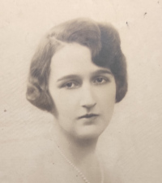

Agnès Sabine Madeleine Marie WATTINNE — Née le 04/06/1904 à Lille — Décédée le 12/12/1993 à Lille
Agnès Sabine Madeleine Marie WATTINNE
Née le 04/06/1904 à Lille
Décédée le 12/12/1993 à Lille
{kind=link}

{kind=link}
{kind=link}
{kind=link}
📷 Cliquez pour voir 4 photo(s)
Arbre généalogique
Mariés le 11/04/1896
André SAINT-LÉGER
29/09/1870 — 25/08/1952
Marguerite DELEMER
13/03/1876 — 28/10/1953
Mariés le 21/06/1902
Eugène WATTINNE
31/10/1875 — 08/12/1927
Madeleine DROULERS
23/01/1883 — 23/02/1974
Mariés le 24/06/1923
Chronologie
Chronologie
Recits
1985 Anny et Claude Saint-Leger par Agnes
1985 Autobiographie d Agnes Wattinne
1985 Biographie de Charles Droulers par Agnes Wattinne
1985 Biographie d Eugene Wattine 1849 par Agnes Wattinne
1985 Biographie d Eugene Wattine 1875 par Agnes Wattinne
1985 Claude Saint-Leger Divers par Agnes
1985 Claude Saint-Leger par Agnes
1985 Les freres d Anny
1985 Lettre dAgnes au sujet dAndre
1985 Lettre dAgnes au sujet Marguerite Delemer
1985 Louis Wattinne par Agnes Wattinne
1985 Recit dAnny au sujet de la mule a Pecq
1985 Recit dAnny au sujet de ses etudes dinfirmiere
Albums photos de famille